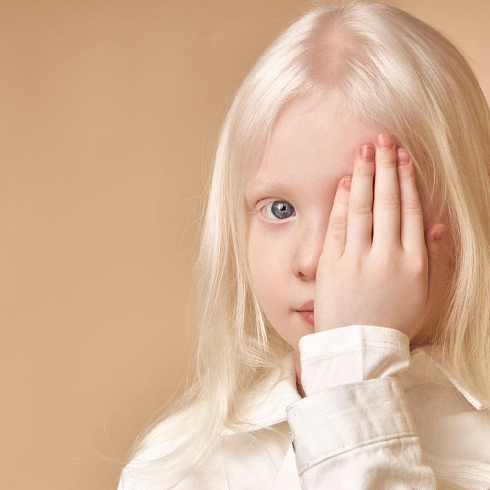
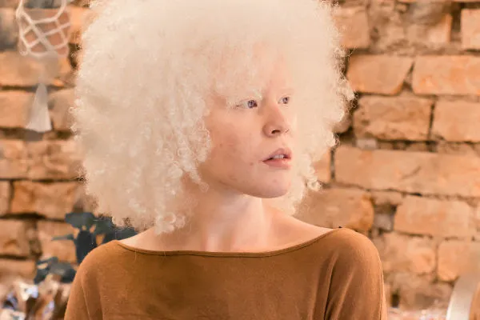

E.E José Vieira de Moraes, 3J

Albinismo
O albinismo é uma condição genética que se caracteriza pela ausência total ou parcial de uma enzima, a tirosinase,
envolvida na síntese da melanina, pigmento marrom-escuro produzido nos melanócitos, que confere cor à pele,
cabelos, pelos e olhos, e funciona como agente protetor contra os raios ultravioleta do sol.O certo é que quanto
menos melanina for sintetizada, maior será o risco de ocorrerem queimaduras e câncer de pele.Para que se
manifeste, os genes defeituosos precisam ser transmitidos pelo pai e pela mãe , que são portadores das mutações
mas não apresentam a doença.
Sintomas
Estrabismo, miopia, hipermetropia, fotofobia, astigmatismo e nistagmo (movimento descontrolado dos olhos em
várias direções, que dificulta focalizar a imagem) são outras condições que prejudicam a visão no albinismo.
Albinos possuem olhos azuis ou castanhos muito claros e um pouco translúcidos. O fato de a íris e a retina serem
transparentes permite enxergar os vasos sanguíneos localizados na parte de trás do globo ocular, o que muitas
vezes passa a falsa impressão de que eles são vermelhos ou rosados.
Diagnóstico
Muitos casos de albinismo são diagnosticados nos primeiros dias de vida, levando em conta as alterações na
pigmentação da pele, dos cabelos, cílios e sobrancelhas. No entanto, o exame oftalmológico minucioso é o
instrumento mais importante para o diagnóstico de albinismo, uma vez que, em menor ou maior grau, a anatomia
dos olhos e a visão são afetadas em todos os tipos do distúrbio.
Tratamento
O albinismo é uma desordem genética para a qual não se conhece cura nem técnicas de prevenção, por que ainda
medidas que ajudam a evitar complicações graves da doença, como o câncer de pele e a cegueira. Os recursos
terapêuticos são vários: uso de óculos ou lentes de contato, tampões para corrigir o estrabismo, óculos escuros
com proteção UHV para controle da fotofobia e para proteger a retina dos raios ultravioleta. Pelo menos uma vez
por ano, portadores de albinismo devem passar pela avaliação de um dermatologista, mas os cuidados com a pele
precisam ser permanentes.
 